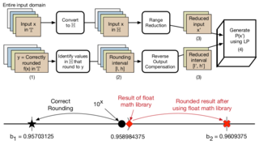

|

|
|
Abstract:
Given the importance of floating point (FP) performance in numerous domains, several new variants of FP and
its alternatives have been proposed (e.g., Bfloat16, TensorFloat32 and posits). These representations do
not have correctly rounded math libraries. Further, the use of existing FP libraries for these new representations
can produce incorrect results. This paper proposes a novel approach for generating polynomial approximations
that can be used to implement correctly rounded math libraries. Existing methods generate polynomials that
approximate the real value of an elementary function f(x) and produce wrong results due to approximation
errors and rounding errors in the implementation. In contrast, our approach generates polynomials that
approximate the correctly rounded value of f(x) (i.e., the value of f(x) rounded to the target representation).
It provides more margin to identify efficient polynomials that produce correctly rounded results for all inputs.
We frame the problem of generating efficient polynomials that produce correctly rounded results as a linear
programming problem. Using our approach, we have developed correctly rounded, yet faster, implementations
of elementary functions for multiple target representations.
|

![[PHOTO]](../../images/knight_small.png)